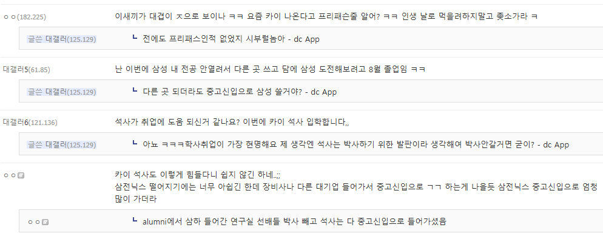

앗 감사합니다 꼭 넣어보겠습니다
인적성 떨어지는거면 음...
지삿불된지 오래라 노력원툴형 빡대가리는 뭘해도 못붙긴하더라
카이 석사는 그래도 학부학점 많이 좋아야 들어갈텐데, 진짜 취업 어렵긴 한가보네
카이 박사하면 될듯
삼하만 쓰니까 그렇지
삼하는 시발 지금 아이비리그 출신이 서류 쓰고 있어
도대체 아이비리그가 왜 기업 신입 공채에 쓰냐곸ㅋㅋㅋ
박사까지 하고 오도록...
학사와 석사는 채용 프로세스가 동일함. 인적성 떨어지면 면잡 기회도 없는걸.. 석사 때 어떤 연구를 했던 인적성 떨어지면 끝임 학력보다는 인적성 실력을 올려야 해
공부잘하는사람도 취업이 어렵긴 매한가지구나 조빠지게 공부했는데 안되면 자괴감쩔듯..
르시썼다는거보면 회로설계 전공한 사람같은데 회로설계쪽이 작년부터 사람 엄청 안뽑더라
회로 설계 쪽은 경력만 진짜 조금 뽑지, 신입으로는 잘 안뽑긴 하는듯
신입 쪽은 현재 분위기 기준으로 그냥 로보틱스나 HBM/DRAM 엔지니어링 쪽으로 가는게 맞는듯
인적성이 학사 석사랑 어떤연관이있는거임...?
인적성은 학벌여부랑 상관없이 인적성 시험자체 준비를 잘해야하하는게 맞지않나? 내가 잘못알고있음?
맞음. 인적성에서 떨어지는 거면 학력이랑 아무 상관없음.
석박사는 석박사를 어디서 했냐도 중요하지만 학부도 중요하게 봄
물론 학부가 좀 아쉬워도 spk 대학원을 갈 정도면 성실성은 어느 정도 보증되어 있기 때문에 괜찮지만,
애초에 학부가 spk인 경우보다는 살짝 낮게 느껴질수밖에 없음
윗댓들처럼 박사까지 해서 세탁을 더 하거나 인적성 준비를 단단히 해야할듯
학부가 차라리 충남대나 충북대였으면 사업장주변 지역가산점 붙어서 좀 나았을 것 같긴함
우선 석사면 학교 별의미없고 학부만 봄
그리고 인적성 보통 1년 잡고 공부하는건데 거기서 떨어진거면 뭐..
게다가 삼하 연구직이면 서서나 카카애들이 올텐데 걔네랑 못싸우지
석사이상은 학교가 중요한게아니라 학부 출신보고 석사 박사 하면서 뭐했냐가 중요함
얘들아 인적성에서 떨어지는거면 학교보는 서류는 통과한거라 학교 어디냐왔나 석사냐가 문제가 아니야. 그냥 능지나 IQ나 문해력 문제임
서류탈락이아니라 인적성으로만 3트떨어진거면 ㄹㅇ 학부나 이런게 문제가아닌데 왜다들 학석사 학교타령하는지 의문
글을 안읽었거나 대기업 공채해본적이 없거나겠제...
경북대 학부 나와서 석사만 해가지곤 세탁 힘들지
ㄹㅇㅋㅋㅋ 경북대면 DB하이텍이나 써봐라
기업 인적성 떨어지는거는 답이 없음. 걍 다른 기업 노릴 수 밖에... 특히 인성은 fit이 안맞으면 안뽑음. 각 그룹 내부(계열사)에서 기존 인원가지고 다시 돌리고 데이터 쌓음.
석사 카이스트는 존나 상관없지 ㅋㅋㅋ
거기다 학석 카이스트여도 인적성 계속 떨어지는거면 포기해야됨 ㅋㅋㅋㅋ인사팀 채용담당도 아무리 학부 좋아도 인적성 떨어지는 애들은 문제 있다고 생각함
유틸리티쓰는거면 전기나 기계과인거 같은데 양기쪽 장비과로 한번 써보는것도 추천드림. 일단 뽑는 TO차이가 너무 심하고....유틸리티도 결국 장비돌릴라고 셋업,메인터넌스 하는거라 그쪽에 강점 있는거 어필하셈.